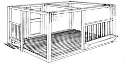
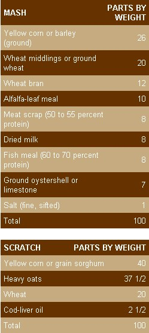
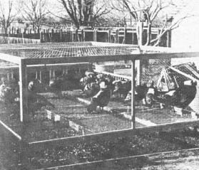
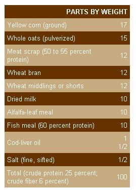
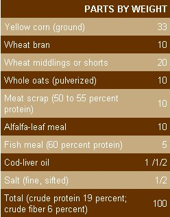
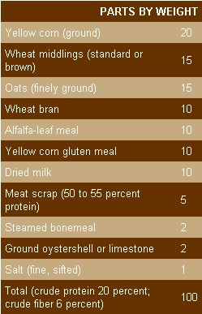
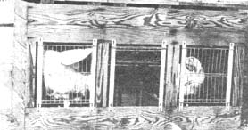
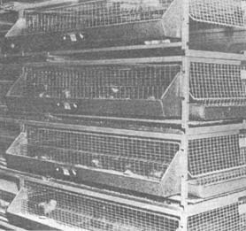

Homestead Turkey Production
May/June 1973
Advances made by the veterinary profession in recent years have completely changed the entire picture of turkey production. As short a time as 15 years ago, the rearing of turkeys was considered one of the most hazardous of agricultural pursuits and many experienced turkey breeders lost upwards of 75% of their entire flocks to disease in a single year. Here then certainly was no place for the amateur, for if the experienced, full-time farmer was often unsuccessful with turkeys, what chance did the average country dweller have with his small flock?
Today, thanks to unrelenting research conducted by the United States Department of Agriculture, various State Experiment Stations and some commercial breeders, many of the hazards of turkey production have been eliminated and there is now no reason why the amateur, using reasonable intelligence and possessing the willingness to follow simple directions cannot produce at least enough turkeys for his own table, at small expense and with low death loss.
Mr. Harvey Griffin, owner of the Wagonwheel Ranch of California, and one of the foremost breeders of Broad-Breasted Bronze turkeys states that at least half of his expense in raising turkeys is labor costs and he further contends that if the amateur is willing to do his own work, he may produce turkeys considerably cheaper than can the commercial breeder. In addition, turkeys are handsome birds, and even though they are not as easy to grow as are chickens, they do not require expensive housing facilities and grow from infancy to maturity in less than six months.
We here on Toowoomba usually purchase a dozen poults (baby turkeys) each year, and have had very good results. True, there have been years when we have lost as many as four of the dozen . . . however, these have usually died in the very early stages before they have consumed very much expensive feed.
TURKEY BREEDS
The prospective turkey raiser will have his choice of six major breeds. They are the Bronze, White Holland, Bourbon Red, Narragansett, Black and Slate. Choice will depend on what varieties of poults are available, the size of the finished carcass desired and personal preference concerning color. All breeds do well when produced on a small scale . . . however, if the fancier wished to butcher birds at a maximum of 25 pounds, he may select the Broad-Breasted Bronze. If, on the other hand, he prefers a bird that will dress out in the neighborhood of 20 pounds, he may select any of the other four breeds. The Broad-Breasted Bronze is an improved variety of the Bronze breed developed on the Pacific Coast: its distinguishing feature being that it produces more white meat per pound of dress weight than any of the other breeds. In the past few years this has become the most popular of all breeds and the beginner may very well start with these magnificent birds for they are hardy, do well on both range and in close confinement, and certainly present a handsome carcass. If on the other hand, unplucked pinfeathers that do not show are of importance (as they are in the kitchen of Toowoomba) then the choice may be the White Holland.
STARTING WITH TURKEYS
Although the rearing of turkeys is much different from the rearing of chickens, the general principles of starting are the same. As with chickens, there are three major beginnings: [1] day-old poults, [2] "started" poults . . . six to eight weeks or older and [3] home-grown poults. This choice is up to the breeder, but unlike chickens, the beginner will find it much more difficult and considerably more expensive to produce home-grown poults than it was to produce home-grown chicks. It goes without saying that breeding turkeys will consume more feed than will the same number of breeding chickens (a full-grown tom will consume over 200 pounds of feed in a single year) and it is therefore not practical to keep breeding stock unless a minimum of 15 hens is maintained, or if the fancier is interested in producing "show stock" thus making the economical production of poults a secondary matter.
DAY-OLD POULTS
Assuming that the selection of breed has been determined, and again assuming that the beginner has contacted a reputable hatchery that produces a good strain of turkeys, then we are ready to start with our flock. First off, it might be wise to issue a word of warning as to how many poults to order. If we are not interested in the commercial side of turkey production (and we should not be unless we have had considerable experience in their rearing) it is not wise to purchase more than a dozen poults. A dozen mature turkeys will produce over 250 pounds of turkey meat which is considerably more than the average family can consume during the year regardless of how much help they receive from neighbors and relations. It must also be remembered that a turkey will eat at least 100 pounds of feed during his six months' residence on the farm which if multiplied by too large a factor soon becomes an expensive outlay. It might also be wise to note that a mere dozen poults do not require extensive housing, and brooding arrangements whereas many more than that number will require considerable construction for their maintenance.
Great care should be exercised so that one will purchase poults from a "pullorum free" flock, for this disease is transmitted from turkey hens to poults and can only be controlled at the source of supply. When the poults arrive from the hatchery, they may be placed under turkey hens (as described in the article, "Homestead Chicken Production", MOTHER NO. 19) or better yet they may be placed in a factory or homemade brooder and kept at a temperature of from 95 to 110 degrees Fahrenheit for the first week or ten days. This temperature is gradually lowered until the poults are from 8 to 10 weeks of age when they require little if any heat. Naturally, outside temperature and humidity, general weather conditions, etc., will be a deciding factor and the turkey raiser will do well to control his heating arrangement by watching over the comfort of his poults rather than any hard and fast regulations concerning temperature.
Sand is considered the ideal litter for starting poults. This litter should be changed at least once per week and no substitute for sand should be used for at least the first three week. After that, wood shavings, clean wheat straw, peat moss or other litters may be substituted. Some turkey producers insist that no litter should be used; instead they maintain their poults on fine wire screen, contending that young gobblers are kept cleaner on wire than on litter and that if these wire screens are kept at least three inches above the floor level, then cleaning is no problem.
Yet regardless of what method is used, the beginner will experience considerable aggravation with the young birds when he attempts to feed them for the first time. Young poults will walk over feed dishes without seeing them and many breeders experience difficulty in teaching the poults to eat. Some recommend that all poults must have their beaks dipped into feed several times during the first day; others contend that feed should be kept on boards directly under the brooder and that the birds will eventually learn to eat. No matter which method is employed, it is recommended that young poults be watched closely so that the breeder knows that they have started to eat. After the first day or two they may be fed in any convenient type of chicken feeder and water is supplied in glass drinking containers.
Turkeys usually stay in the brooder house (or in batteries if they are used) for the duration of the brooding period. Then, having reached six weeks, they are placed on the sun porch. Some breeders contend that they should have access to the porch before that time (and are therefore given roosts to use before the age of six weeks has been reached) . . . however, that is a question that must be settled by local climatic conditions, time of year, etc. We here on Toowoomba have always maintained our poults indoors for the first six weeks with considerable success.
"STARTED" POULTS
As in the case of chickens, turkey poults may be purchased that have attained the age of from six to eight weeks. Naturally, these poults are considerably more expensive than the dayold poults and there is little to be gained by their purchase except that the turkey producer is relieved of the responsibility of maintaining a brooder for he takes delivery of the poults at an age when heat is no longer necessary. Feeding of these "started" poults is of course the same as that of day-old birds once the sixth to eighth week has been passed.
HOME-GROWN POULTS
We have previously stated that the beginner will find it unwise to attempt to produce his own poults unless he has had considerable experience with turkeys. Whereas the purchase of young gobblers together with their fattening is roughly a six-month program, the maintenance of a breeding flock is a year-around proposition and is not practical for the average beginner. Of course, if you are of an inquisitive nature (as are the Widmers) you will want to raise your own turkeys. There is no reason why you shouldn't and more power to you.
First, let us assume that the desired breed has been selected and that we are prepared either to purchase breeding stock, or as in the case of Toowoomba, the better females from the originally purchased poults have been saved. Then we are ready to get into business. If home-grown turkey hens are kept, it would be advisable to purchase a tom from an unrelated strain.
Obviously, the most satisfactory time to select breeding birds is before Thanksgiving so that those good enough either to save or purchase are obtainable before the holiday axe falls. The breeders should have compact, meaty bodies, with straight breasts and broad backs. They should be vigorous and by all means they should have originated in a purebred flock and one free from pullorum.
In mating it should be remembered that one mature male will handle from 15 to 18 hens, and the best age for these breeders is two years old even though yearlings may be used in a limited capacity.
Ten days after mating it may be assumed that eggs are fertile and these may be saved as "hatchers". Each four hens should be provided with a nest, and eggs should be gathered at least twice daily . . . more often during warm weather. The average hen will produce 35 eggs each season before becoming broody, and if artificial lights are used and if hens are "broken up" when they try to set, this figure may easily be increased to 60 eggs.
Eggs should be stored at a temperature no higher than 60 degrees Fahrenheit and should not be held longer than ten days between laying and setting. As to rations, laying turkeys should be fed a combination of mash and scratch, and of course salt and oystershell should be available at all times. Excellent commercial turkey feed mixtures may be purchased and for those producing a limited number of birds annually this is the answer to the feed question. However, for those who are interested in mixing their own feeds or at least knowing what should be included in an ideal mixture, we think it wise to include many mash mixtures that have been found satisfactory. An excellent laying mash and scratch is as follows:
During the laying season mash should be kept before the hens at all times, the scratch being hand-fed twice daily and given at the rate of about 1/4 pound per hen per day.
Turkey hens make good incubators and the average turkey hen will cover from 15 to 18 eggs, the chicken hen (of the medium-weight breeds) from 7 to 10 eggs. Either have proven satisfactory, yet if eggs are to be artificially incubated then it is advisable to take them to a commercial hatchery and have the eggs custom incubated . . . usually at a very small cost.
Turkey eggs incubate in 28 days and the method of handling both hen and poults is much the same as described in the article, "Homestead Chicken Production", in MOTHER NO. 19. In the event that an artificial brooder is to be used then we refer the reader back to the "Day-old Chick" section of that article.
RAISING TURKEYS ON WIRE
As with chickens there are two major methods of raising turkeys: [1] range production and [ 2] raising turkeys on wire. Concerning chickens, we are willing to give the beginner the choice of either method. However, in the case of turkeys, we strongly advise all beginners to stay with the wire or sun-porch method.
As in the case of chickens, it is probably true that turkeys confined to wire enclosures consume more feed than those who have unrestricted range, yet the advantages from a sanitary standpoint of the sun porch should be the deciding factor for the beginner, regardless of how much range he may have available.
Turkeys require a minimum of five square feet of floor space per bird when the sun-porch method is used. There is no necessity for these sunning areas to be constructed on an elaborate scale for many small-scale turkey producers have had excellent luck with homemade and makeshift rigs. It is merely a chicken-wire cage large enough to allow the five square feet of floor space required for each bird and is usually constructed so that the birds have headroom-3 feet 6 inches is sufficient-and containing enough roosts so that all birds may perch simultaneously. The floor may be constructed either of wire or wooden slats and the entire contraption is built some three feet above the ground so that droppings may be easily raked out from under the porch and placed in the compost pile. About 20% of the sun porch should be covered with some sort of roofing material so that the birds will have ample shade during hot summer days and also supply a cover so that they may get out of driving rains. The sunning area should be constructed so that all feed and watering troughs may be reached from the outside, thus eliminating the spread of contagious disease by the attendant walking from one pen to the other.
Turkeys are placed on this sun porch as poults directly from the brooder room and are kept there for their entire stay on the farm. Of course porches of any size may be constructed and more and more commercial producers are going from the range to the sun-porch method of rearing turkeys. Should the breeder raise more than 100 birds annually, it is advisable to have more than one sunning area (or at least to supply partitions in large sun porches) so that not more than 100 birds are kept together. This will eliminate danger from piling up and overcrowding.
In the range method, great care must be exercised so that disease is not spread through soil contamination. Under no circumstances should turkeys be permitted to run on ground that has previously been occupied by chickens, and pastures or ranges must be changed continually if the birds are to remain healthy. These pastures should be changed at least every ten days (if they are small) for once disease strikes control is most difficult and sometimes utterly impossible.
FEEDING TURKEYS
Even though turkeys are very particular in their eating habits, properly fed young birds make astounding gains. For those interested in a very limited number of birds it would not be practical to mix and grind starter mash for there are any number of commercial products that have proven very satisfactory. However, for those who like to mix their own feeds, and for those who wish to compare the contents of commercial mash against that of ideal composition, the following mixtures may prove of interest.
In the event that liquid skim milk is available (and there is no better feed for young turkeys) the following starting mash may be used to advantage.
In addition to either of these rations, fine gravel or coarse sand should be supplied together with green feed if such feed is available. Tender lettuce, Swiss chard, short lawn clippings or tender alfalfa are all excellent. Yet the beginner must be warned not to feed tough greens for these often cause impaction in young birds which sometimes proves fatal.
By the time poults have reached six to eight weeks of age and are confined to the sun porch, they may be switched to a ration made up as follows:
Commercial feed manufacturers also make excellent mashes that may be fed after poults have reached six to eight weeks, yet regardless of whether mash is purchased or home mixed, a grain ration is also fed at this point. Turkeys do extremely well on corn, whole oats, barley or whole-wheat, and this grain is fed in unlimited amounts . . . the young gobblers are given access to all the grain they will consume together with the recommended mash. As the turkeys grow older, usually by the time they have reached 16 to 17 weeks, they will start increasing their consumption of whole grains and will voluntarily cut down on the percentage of mash consumed. This is natural and need not concern the producer. This is especially true as cool weather moves in and some breeders stop feeding mash altogether at this juncture. Here on Toowoomba, however, we have found that it pays to keep mash before the birds regardless of how little they will eat for they receive food values from mash that is not always present in whole grains. SANITATION
Turkeys are the most sensitive of all the members of the home barnyard concerning sanitary conditions, and success or failure with turkeys is often in direct relationship to sanitary living and feeding arrangements. If "pullorum-clean" poults have been purchased, there is little danger from this disease. However, there are many diseases that must be controlled if one is to be successful. Coccidiosis has been a troublemaker for turkey breeders for generations and is best combated by maintaining strict sanitation in the brooder house. Litter must be kept dry and changed at least once each week, and feeders and water containers must be kept sterile. Clabbered skim milk has been found to be an excellent preventative for coccidiosis, yet if sour milk is fed, feeders must be sterilized daily so that the leavings from this milk will not remain in the troughs, thus spreading disease.
Blackhead is perhaps the most dangerous of the long list of turkey diseases. This sickness, which causes a black appearance of the head as the name implies, is often carried by chickens although they do not always show symptoms of the disease. It is for this reason that many contend that turkeys and chickens should never be produced on the same farm . . . however, if care is taken there is no logical reason why turkeys and chickens cannot be produced on the same property. Of course, it goes without saying that these two birds should never be permit ted to run together, that turkeys never be permitted to range on land that has previously ranged chickens and that the turkey fancier never walk from his chicken pen into turkey pens without first slipping on a pair of rubbers that are kept for that purpose. This is the great advantage of the sun-porch method of turkey raising, for if this porch is constructed so that the birds may be fed from the outside, then there is no necessity for the breeder to walk into the turkey pen... thus eliminating all chance of blackhead contamination.
THE FINISHED PRODUCT Turkeys are usually fed so that that they will reach their maximum weight during the Thanksgiving and Christmas season and the entire flock (less those that we may wish to keep for breeding stock) should be butchered at that time. Feed costs mount steadily as the turkeys grow to maturity and there little to be gained by keeping the birds after they have reached their prime.
Turkeys freeze very well and may be stored from eight to ten months at zero degrees Fahrenheit without losing any of their original quality, especially if packed in cellophane bags. Turkeys may be stuffed before freezing if this is desired and are thus ready for the oven directly after being taken from the deepfreeze and permitted to thaw. Turkeys may also be smoked, canned or used as broilers . . . however, the use of broilers is not economical and few turkeys are butchered at this early age.
Smoking of turkeys is not at all difficult and excellent results have been obtained by many an amateur. A homemade smoker may be constructed by anyone handy with tools. The turkeys should be smoked whole for 20 to 24 hours after having been soaked in a brine solution for a period of from 9 to 12 days. Oversmoking of turkeys must be avoided for this darkens the skin too deeply. Also oversmoked turkey tastes exactly as does ham and therefore the turkey loses its distinctive flavor.
 This sun porch can be built to accommodate any number of turkeys. Both feeder and waterer are easily filled from outside the pen; the slat floor facilitates cleaning. A small door is placed where turkeys can be readily caught with a leg wire. |
 Here's an adaptable pen that will break broody turkeys and chickens. It can be structured in various sizes and is easily serviced from the outside. |
 The sun porch is one of the most practical approaches to producing diseasefree turkeys. Add a small covered shed to the one in the photo?which is in a warm climate?and it becomes an ideal arrangement for almost any climate. |
|
 These White Holland turkey hens are kept in trap nests to insure their pedigree. The attendant will write each bird's leg band number on its eggs be fore releasing it. |
 Large producers start their turkey, chicken, and duck poults in elaborate starter batteries, but they're not really necessary for the small operator. |
 |
|
 |
 |
 |